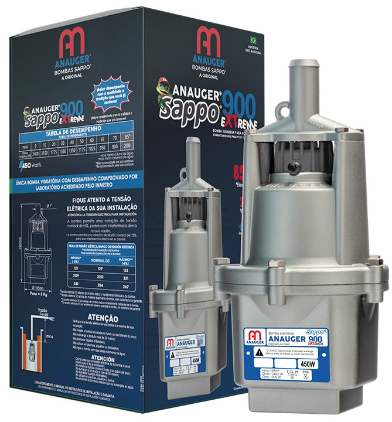
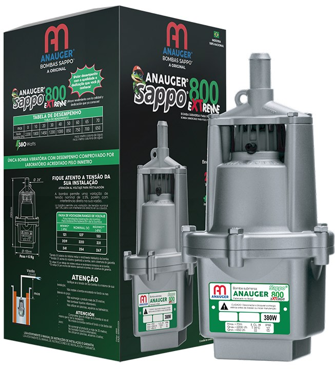
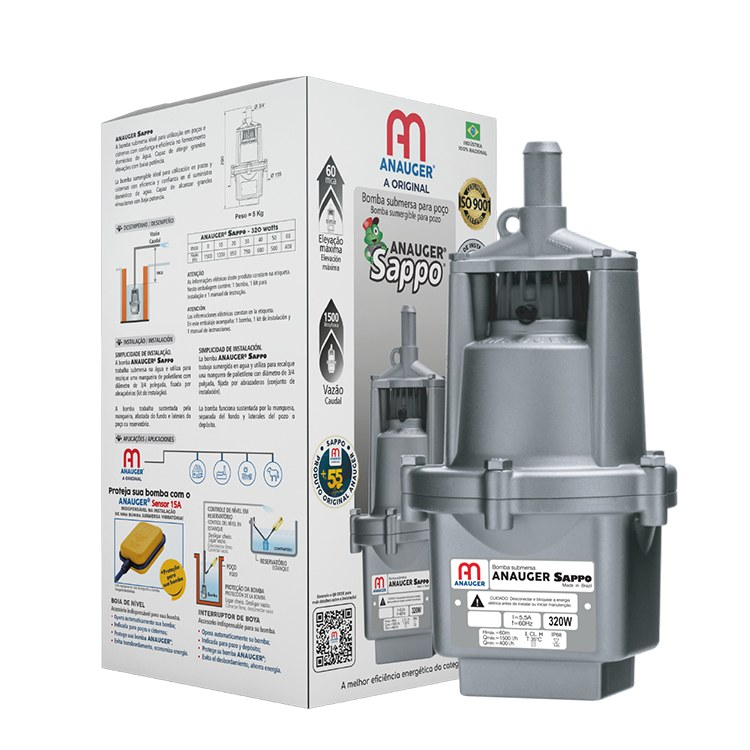
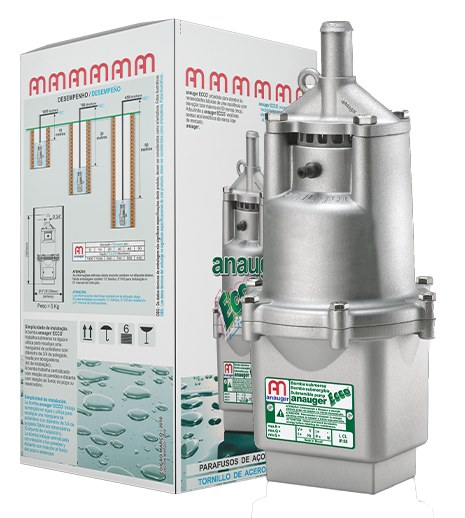
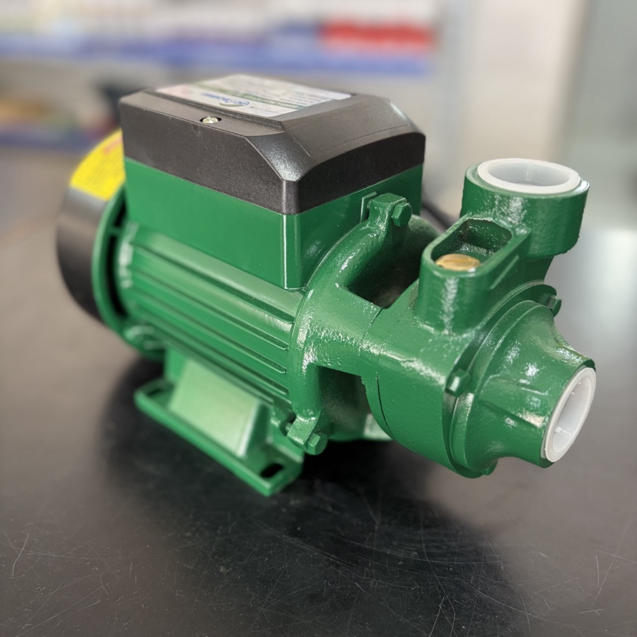
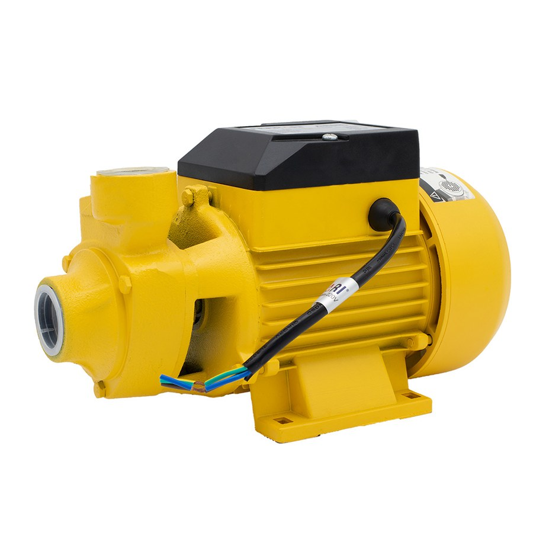
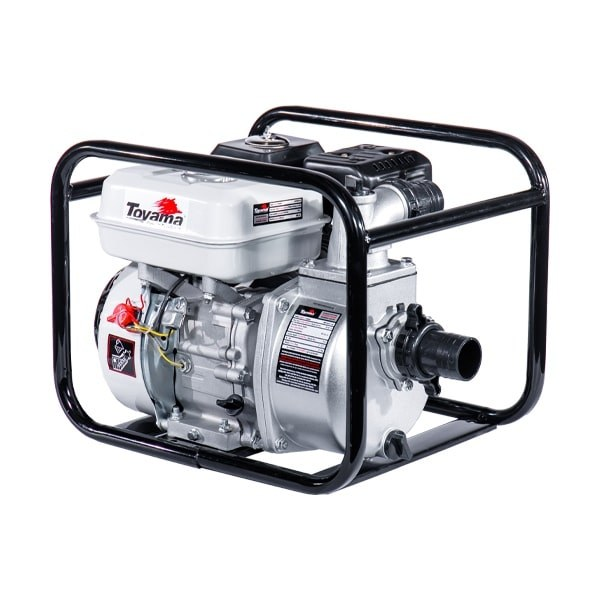

Anauger Sappo 900 Extreme
450 W · puxa até 85 metros
- Até 2.400 litros por hora
- A mais forte da linha: vence 85 m de altura
- Poço de 7 polegadas (180 mm) ou mais, saída de 1"
- A submersa mais vendida aqui na loja
Bomba submersa pra cisterna, poço raso e poço profundo, das marcas que aguentam o serviço no sertão. E se um dia ela parar, a gente conserta aqui mesmo e tem a peça no balcão.
Responda quatro perguntas rápidas sobre o seu poço e a gente indica por onde começar. Leva menos de um minuto, não precisa de cadastro.
Diga a profundidade do poço, a altura da caixa d'água e pra que você vai usar. A gente indica a bomba certa pelo WhatsApp.
Falar com a genteFotos e fichas oficiais do fabricante. O que muda de uma pra outra é a altura que ela puxa e a quantidade de água por hora. Na dúvida, chame a gente no WhatsApp que a gente indica a certa pro seu poço.

450 W · puxa até 85 metros

380 W · puxa até 70 metros

320 W · puxa até 60 metros

300 W · puxa até 50 metros
Todas 127V, 220V ou 254V, com proteção IP68 e certificação ISO 9001 do fabricante.
Pra puxar água de cisterna, caixa, açude ou rio, com a bomba instalada fora d'água.

220V · puxa até 17 metros

370 W · 220V · puxa até 22 metros

Gasolina · 5,5 HP · 2 polegadas
Também temos bombas pra poço profundo de 4 polegadas e outras motobombas no balcão: pergunte no WhatsApp.
Comprar bomba pela internet é fácil. Difícil é achar quem conserte e quem tenha a peça quando ela parar no meio do verão.
Diga a profundidade do seu poço e quanta água você precisa. A bomba errada gasta energia à toa ou nem puxa água.
Fazer o teste rápidoSe parar, traz aqui. A gente tem oficina própria pra bomba submersa e bomba d'água, sem precisar mandar pra capital.
Conheça a oficinaCaneca, canopla, amortecedor, válvula, carcaça: temos peça de reposição em estoque. Muitas vezes a bomba não precisa ser trocada, só consertada.